An end-to-end UX case study on why adults drop out of self-paced courses. I designed the first version, then went back, critiqued it, and redesigned the whole flow for mobile and desktop, with a clickable prototype.
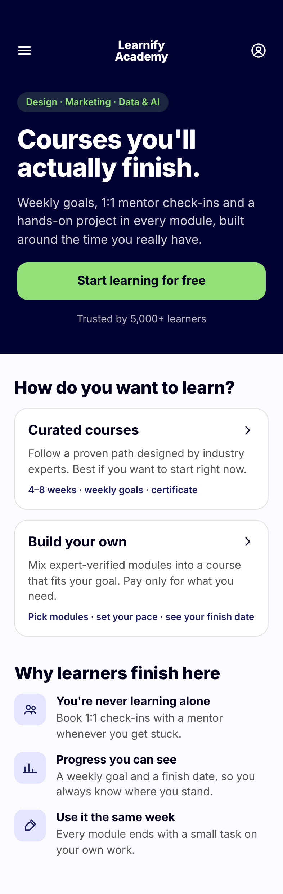
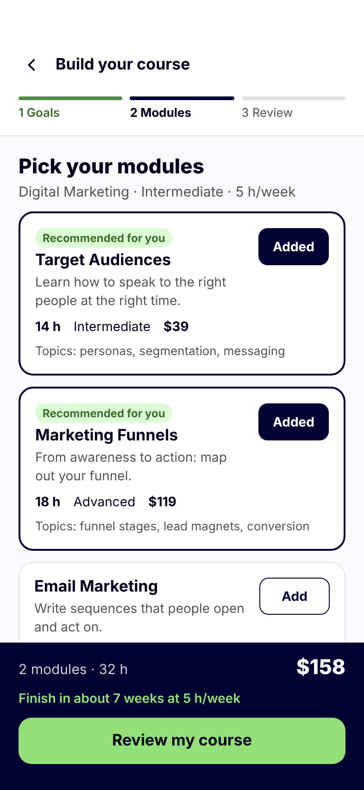
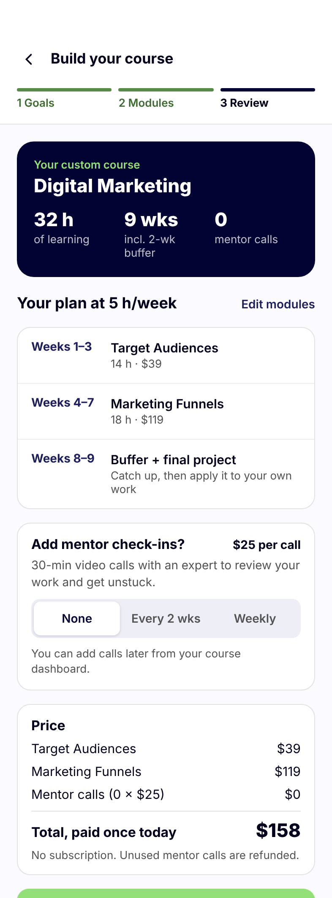
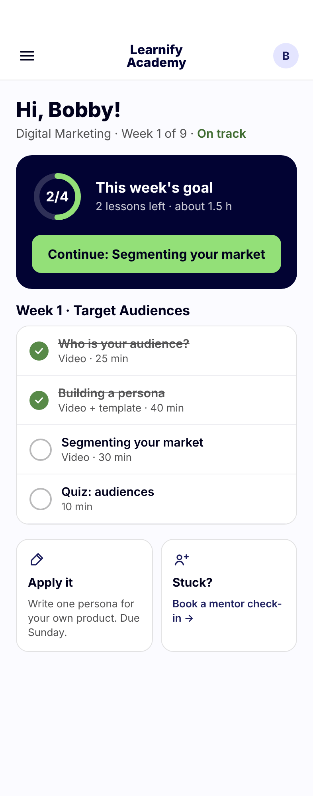
Many adults start short, self-paced online courses to grow professionally, but most don't finish. Five interviews and a competitive analysis pointed to three reasons: feeling alone in the process, no feedback on progress, and difficulty applying what they learn.
“If there's no one tracking your progress, it's much easier to quit.”
“It feels like I'm not moving. I don't feel like I'm learning anything new — just consuming content.”
“If you don't apply what you've learned right away — it just fades.”
Interview patterns in motivation, struggles and learning style shaped two research-based personas.
A 35-year-old IT project manager who feels stuck in his career. He wants practical, time-efficient growth but loses motivation in long, unstructured courses.
A 31-year-old HR professional balancing personal and professional growth. She values engaging learning that sparks creativity and helps her apply new skills in real life.
I mapped two key flows: enrolling in an existing course and building a personalized one. Both are designed to keep momentum: less friction, only the relevant steps, and users in control.
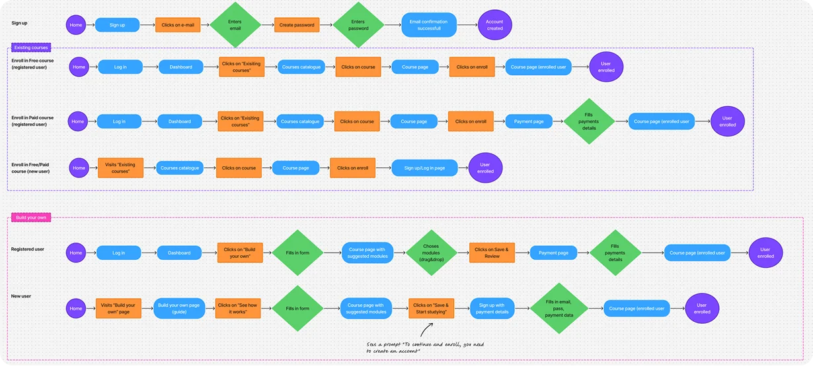
Guided by the task flows, I built mobile-first low-fidelity prototypes, then a visual identity with logo, typography and a color system. The first high-fidelity design covered the homepage, account creation and building a custom course as a first-time user.
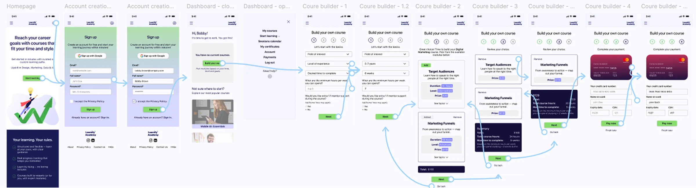
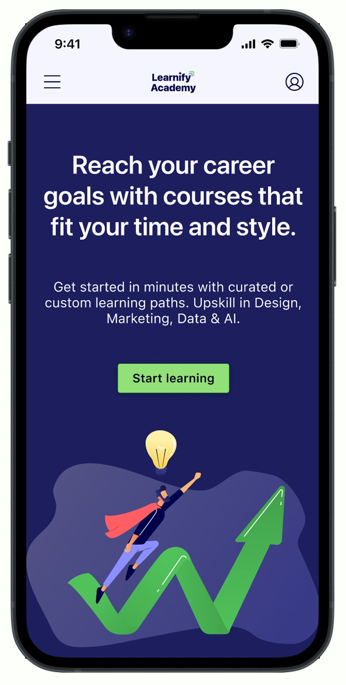
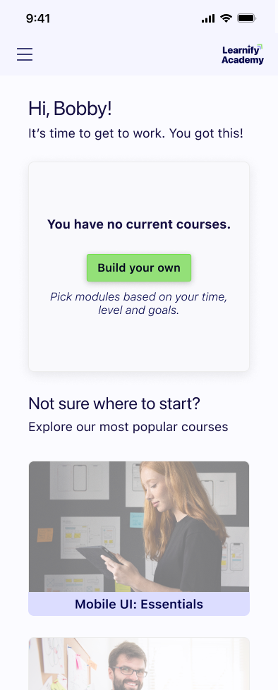
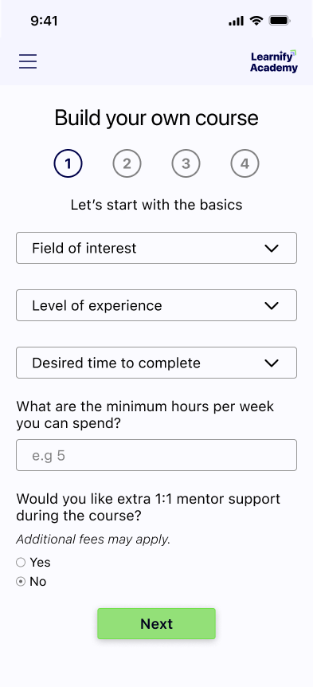
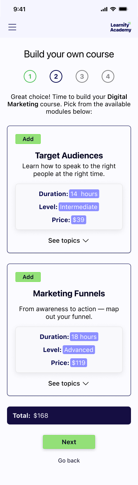
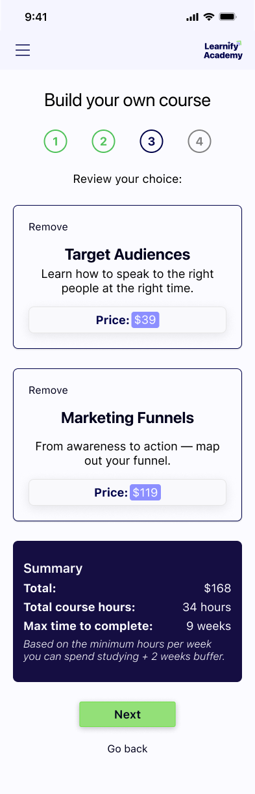
Same brand and research. Each screen does one job, and nobody reaches payment without knowing what they'll get, when they'll finish and what it costs.
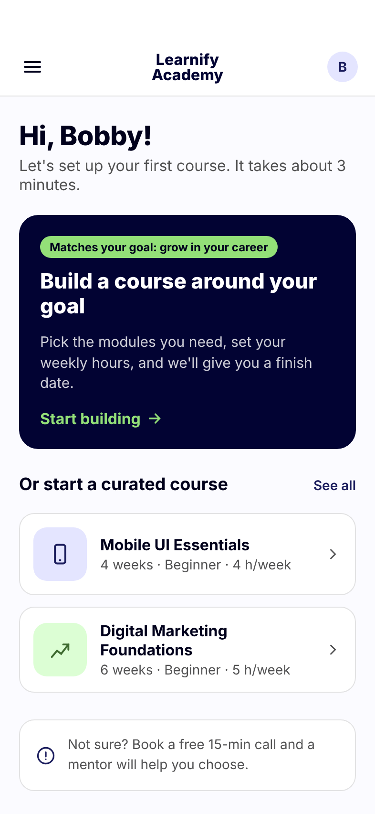
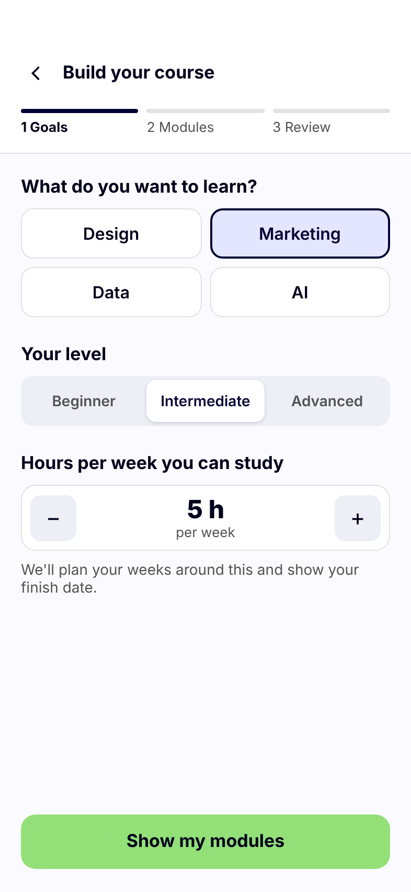
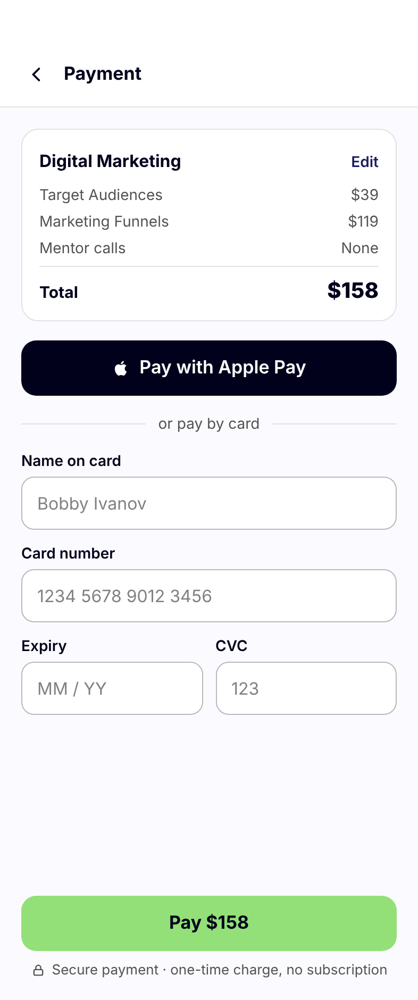
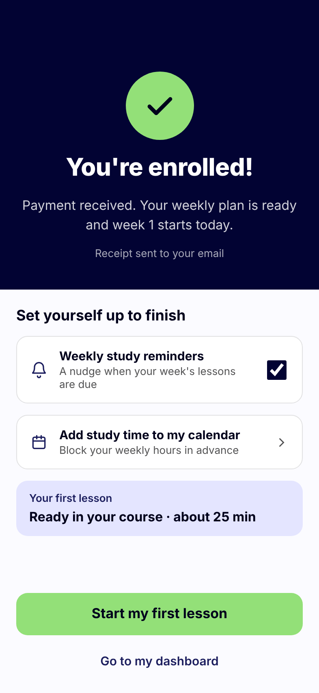
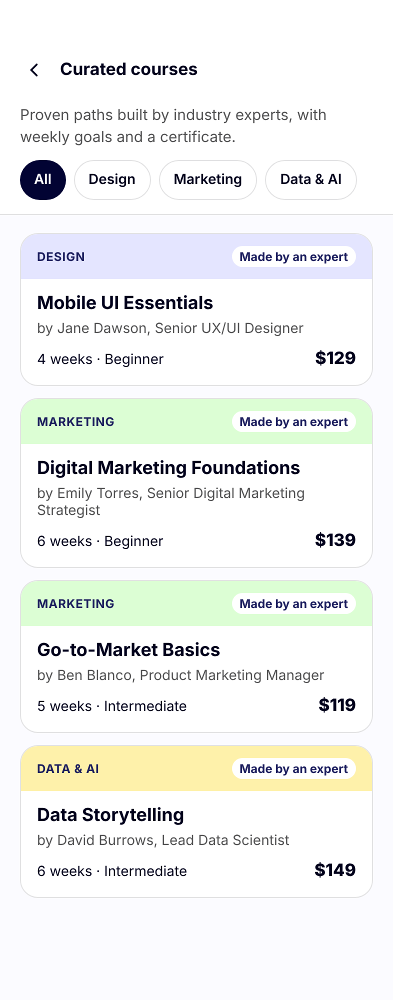
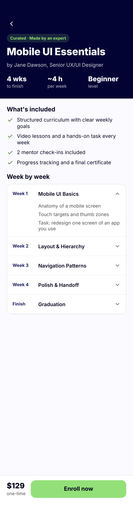
Both paths are clickable from the home screen. Add or remove modules, change how often you meet a mentor, and watch the price and finish date update.
Desktop isn't a stretched phone. The extra space lets the price stay in view the whole time and turns review and payment into one screen.
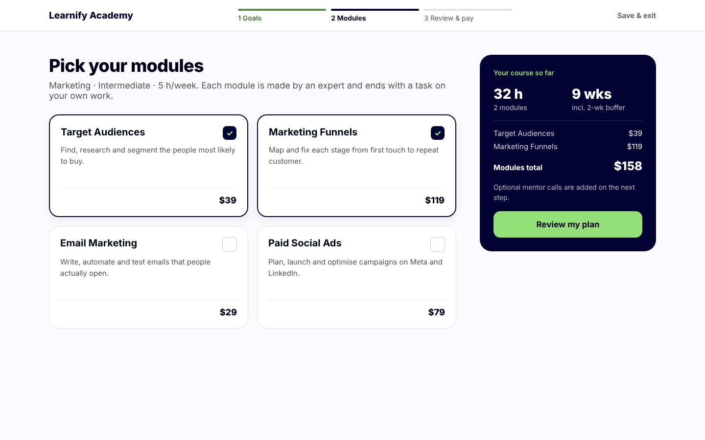
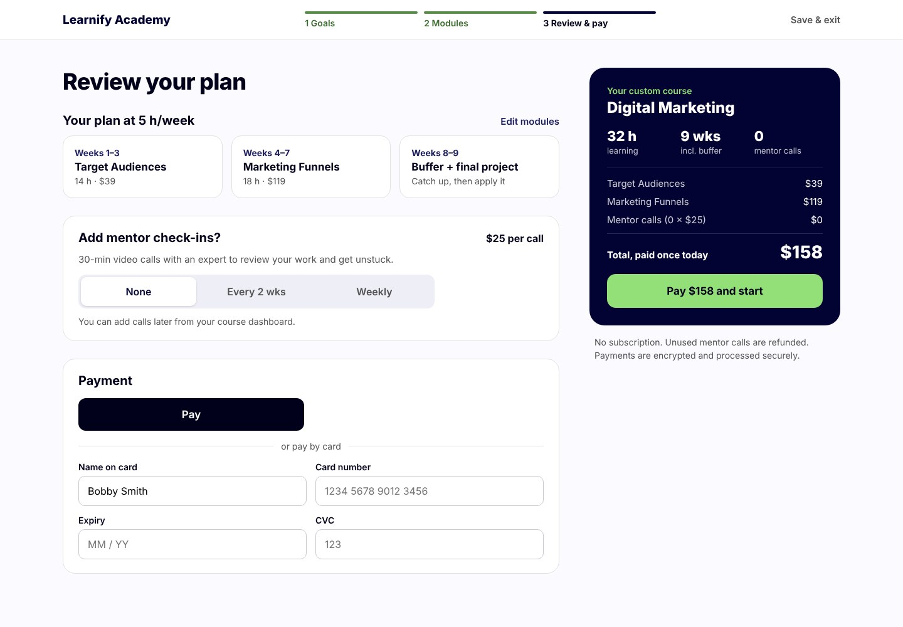
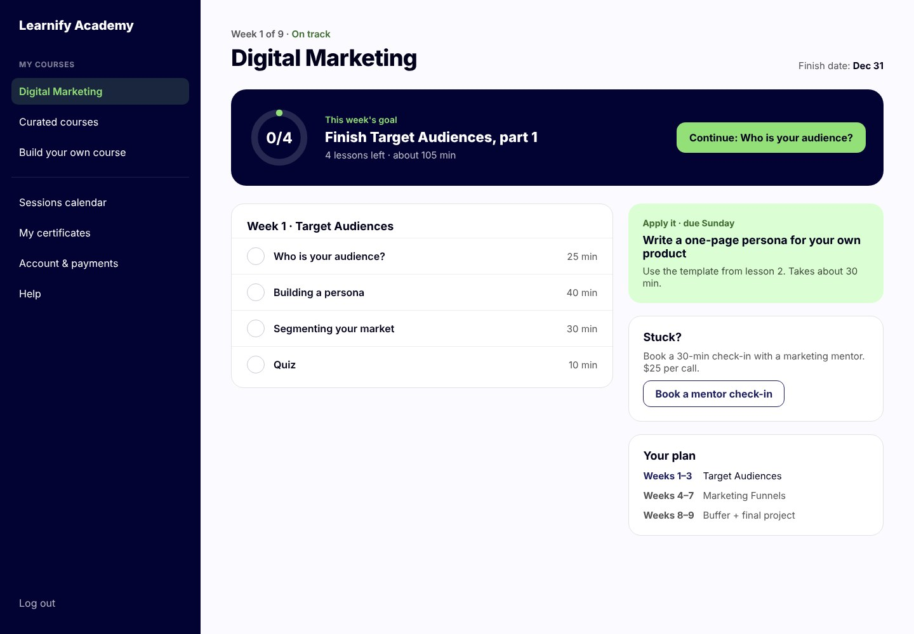
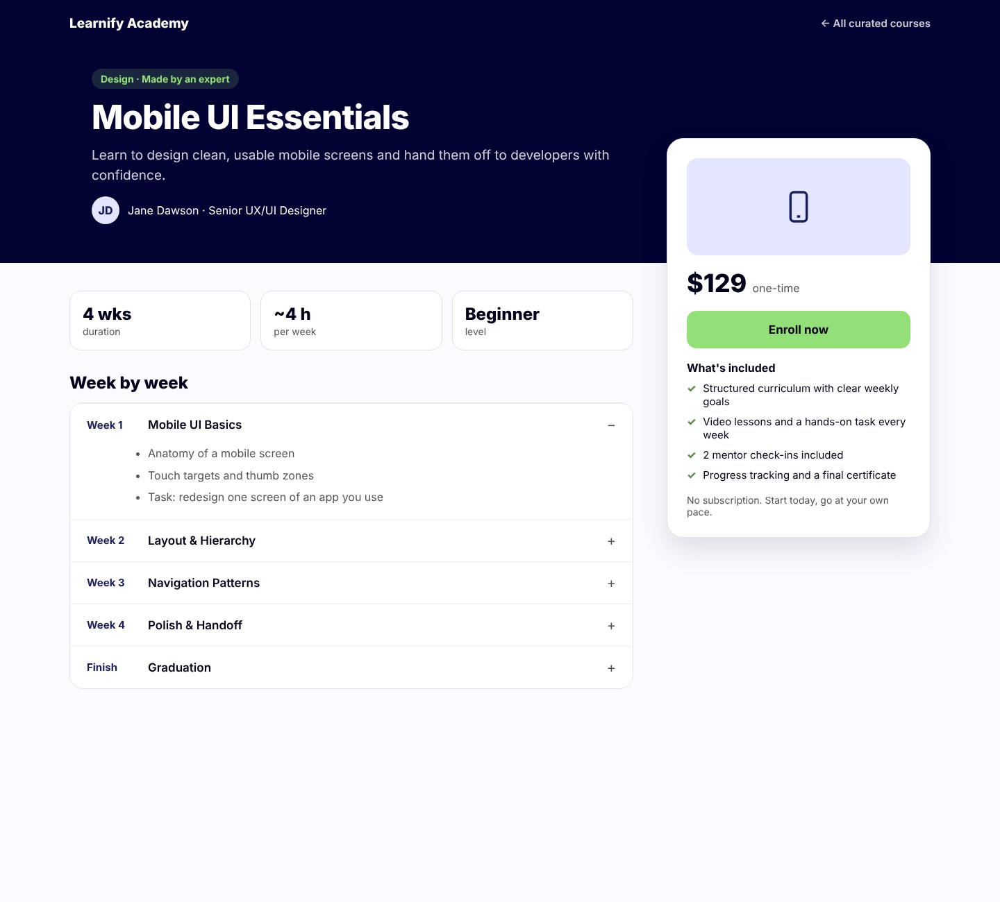